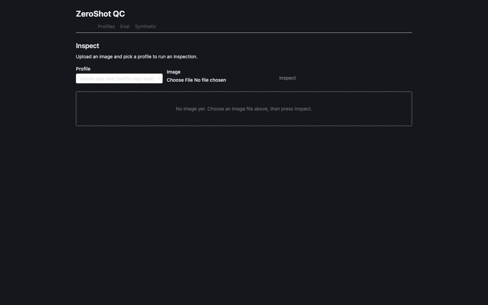
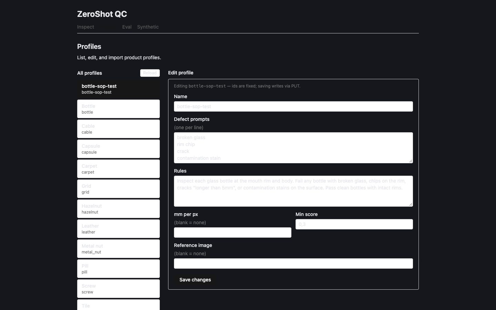

ZeroShot QC — UI redesign: 6 decisions
Planning only. Pick an option per question, queue each, then Send to Agent. Recommended options are pre-selected.


What the probes showed
- Taste inspector (
--app) baseline: all 4 pages FAIL on contrast.index.cssflips body to dark, but every page hardcodes light Tailwind greys (e.g.Inspect.tsx:169). - Also flagged: 2
h1per page (App.tsx:17+ each page), Eval numbers left-aligned without tabular figures, large empty first screen on Inspect/Synthetic. - ui-ux-pro-max
--design-system: style "Minimalism & Swiss", fonts Fira Sans + Fira Code, navy primary. Its "Hero + CTA" pattern is landing-page — dropped for an app. - No component layer: ~60 repeated inline class strings across 4 pages (buttons, inputs, alerts).